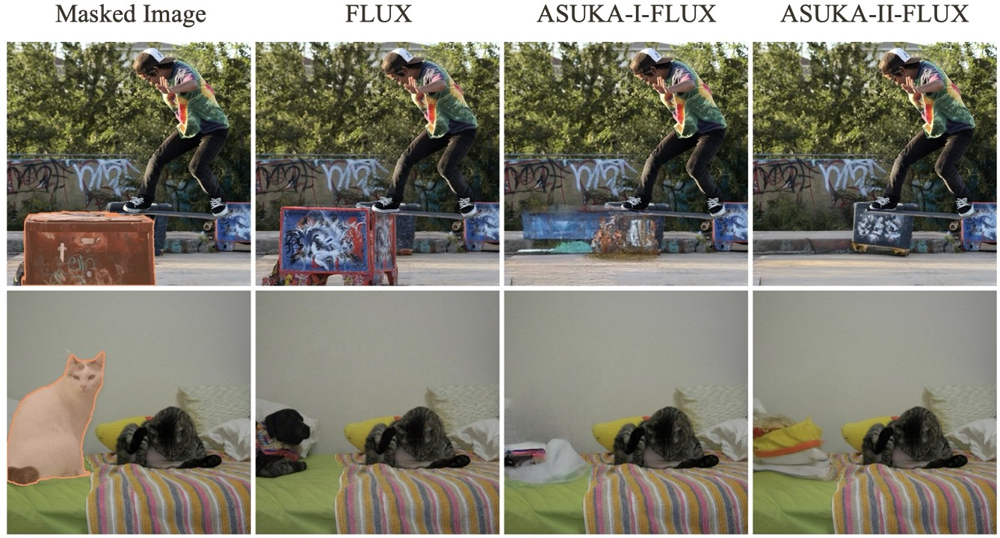
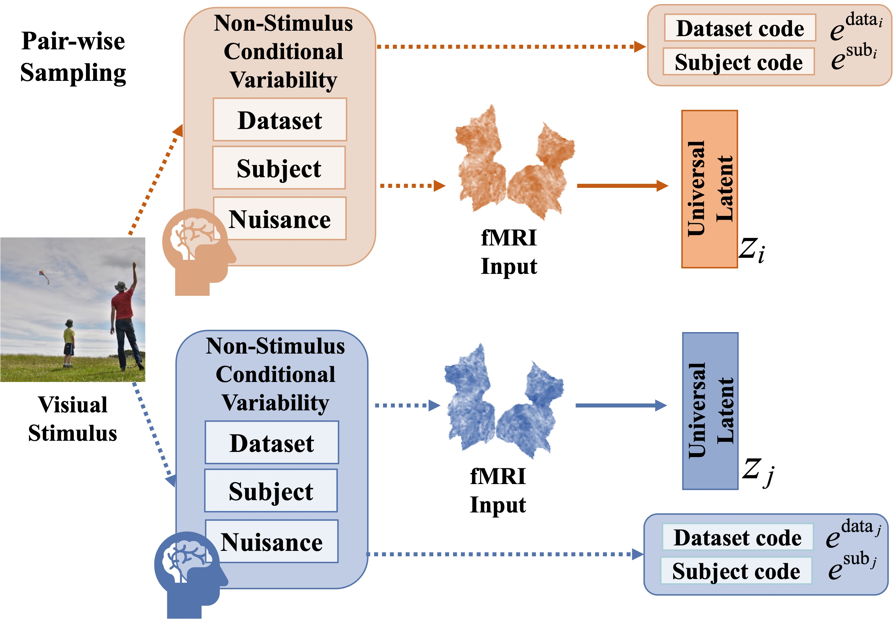
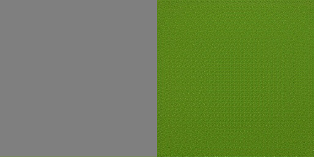
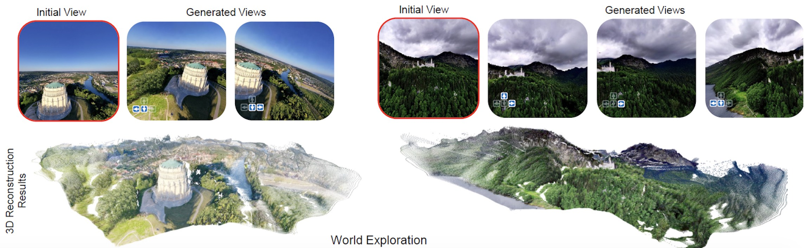
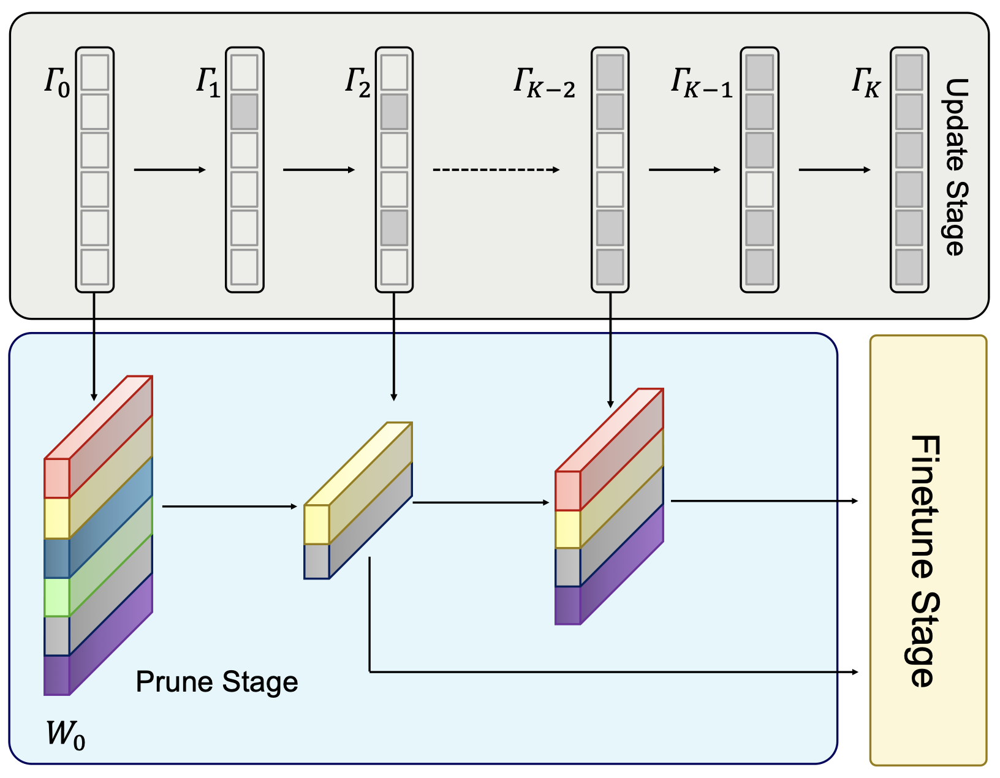
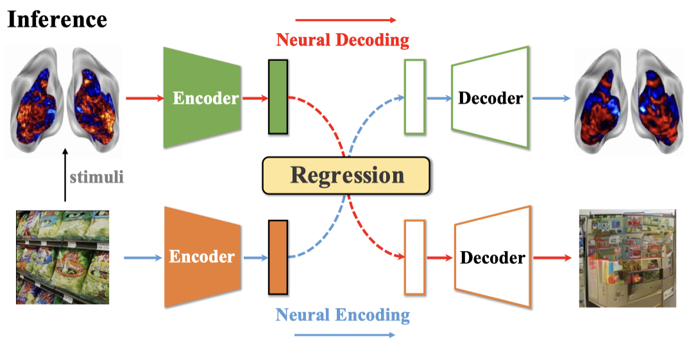
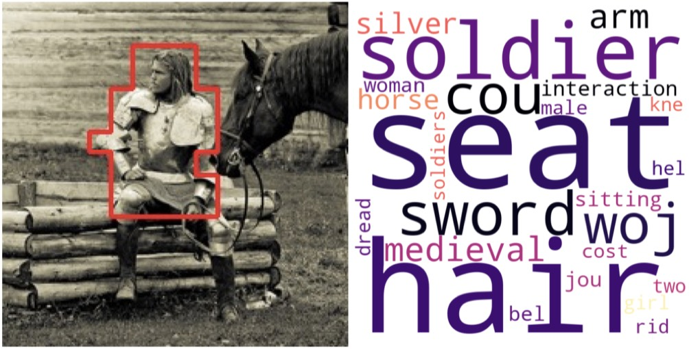
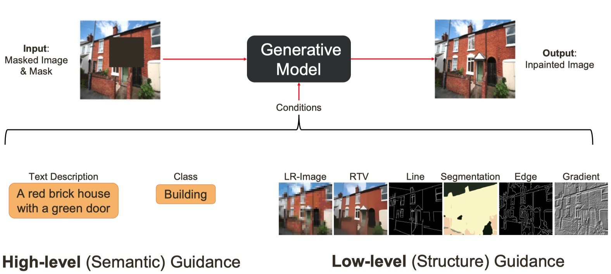
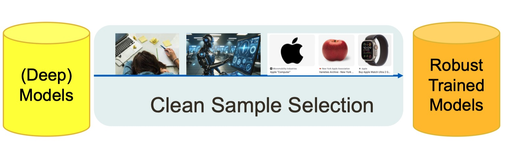

About
|
Yikai Wang is a postdoctoral researcher at Meta, working with Prof. Tao Xiang on advancing vision and generative modeling techniques.
Prior to joining Meta, he was a research fellow at MMLab@NTU, Nanyang Technological University, under the guidance of Prof. Chen Change Loy, where he investigated the structural modeling of image generation.
He earned his Ph.D. in Statistics and B.Sc. in Mathematics from Fudan University, advised by Prof. Yanwei Fu, establishing a robust foundation in generative computer vision and statistical machine learning.
I am always open to academic discussions and collaboration. Please feel free to reach out via yi-kai.wang@outlook.com. Please let me know who you are. |

|
News
- [2026.01] Our works on next visual granularity generation and camera-centric generation have been accepted by ICLR 2026!
- [2025.10] Our work on subject repositioning has been awarded a J2C Certification (10% of accepted papers) by TMLR!
- [2025.08] Our work on next visual granularity generation is available on arxiv!
- [2025.06] Our work on spatial-temporal aware diffusion policy learning has been accepted by ICCV 2025. Congrats to Zhenyang!
- [2025.05] Glad to be recognized as an outstanding reviewer for CVPR 2025!
- [2025.05] We are organizing Mobile Intelligent Photography and Imaging workshop at ICCV 2025!
- [2025.04] I am glad to be invited to serve as an area chair for NeurIPS 2025.
- [2025.04] Our work on image inpainting has been selected as a highlight paper by CVPR 2025!
- [2025.03] Received a grant from NVIDIA to support my ongoing research!
- [2025.02] Our works on image inpainting and visual grounding have been accepted by CVPR 2025. Congrats to Zhenyang, and a big thank you to my co-authors!
- [2025.01] Our works on long-trajectory empty street reconstruction and transformer pruning have been accepted by ICLR 2025. Congrats to Jingwei and Yizhuo!
- [2024.12] Attending NeurIPS 2024 at Vancouver, Canada.
- [2024.11] Our work on fMRI-vision latent alignment has been accepted by TMLR. Congrats to Prof. Qian!
- [2024.10] Our work on subject repositioning has been accepted by TMLR!
- [2024.09] Our works on lexical visual-language alignment and visual in-context prompt selection have been accepted by NeurIPS 2024. Congrats to Yifan, Chengming and Chen!
- [2024.07] I have joined the MMLab@NTU as a postdoc! Looking forward to this new journey!
- [2024.07] Our work on consistent fMRI decoding has been accepted by ECCV 2024. Congrats to Jingyang!
- [2024.05] I have successfully defended my Ph.D. thesis!
Research
-
Generative Vision:
- Generation: next visual granularity generation [NVG, ICLR2026], camera-centric generation [Puffin, ICLR2026], amodal completion [C2F-Seg, ICCV2023];
-
Inpainting:context-stability & color-consistency [ASUKA, CVPR2025(Highlight), extension], subject repositioning [SEELE, TMLR2024(J2C Certification)],
ref-guided inpainting [LeftRefill, CVPR2024], empty street reconstruction [StreetUnveiler, ICLR2025];
-
Multimodal Intelligence:
- Vision-action: active perception [ActiveVLA, preprint]. spatial-temporal aware policy learning [DP4, ICCV2025];
- Vision-language: visual grounding and reasoning [ReasonGrounder, CVPR2025], lexical alignment [LexVLA, NeurIPS2024];
- Vision-fMRI: cross-subject zero-shot decoding [preprint], consistent fMRI decoding [NeuroPictor, ECCV2024], latent alignment [TMLR2024].
-
Subset Selection:
- Analysis: false-selection-rate control [Knockoffs-SPR, TPAMI2023], noisy set recovery [ICI, TPAMI2021];
- Application (sparse incidental parameters): out-of-distribution detection [CVPR2024], learning with noisy labels [SPR, CVPR2022], few-shot learning [ICI, CVPR2020];
- Application (other statistical models): network pruning [ICLR2025], in-context-learning [Partial2Global, NeurIPS2024].
Papers
|
 |
Aligned Stable Inpainting: Mitigating Unwanted Object Insertion and Preserving Color Consistency |
|
 |
The Pictorial Cortex: Zero-Shot Cross-Subject fMRI-to-Image Reconstruction via Compositional Latent Modeling. |
|
|
ActiveVLA: Injecting Active Perception into Vision-Language-Action Models for Precise 3D Robotic Manipulation. |
|
 |
Next Visual Granularity Generation. |
|
 |
Thinking with Camera: A Unified Multimodal Model for Camera-Centric Understanding and Generation. |
|
Spatial-Temporal Aware Visuomotor Diffusion Policy Learning. |
|

|
Towards Enhanced Image Inpainting: Mitigating Unwanted Object Insertion and Preserving Color Consistency. |
|
ReasonGrounder: LVLM-Guided Hierarchical Feature Splatting for Open-Vocabulary 3D Visual Grounding and Reasoning. |
|
|
 |
Adaptive Pruning of Pretrained Transformer via Differential Inclusions. |
|
3D StreetUnveiler with Semantic-aware 2DGS - a simple baseline. |
|

|
Repositioning the Subject within Image. |
|
 |
LEA: Learning Latent Embedding Alignment Model for fMRI Decoding and Encoding. |
|
 |
Unified Lexical Representation for Interpretable Visual-Language Alignment. |
|
Towards Global Optimal Visual In-Context Learning Prompt Selection. |
|
|
NeuroPictor: Refining fMRI-to-Image Reconstruction via Multi-individual Pretraining and Multi-level Modulation. |
|

|
LeftRefill: Filling Right Canvas based on Left Reference through Generalized Text-to-Image Diffusion Model. |
|
Test-Time Linear Out-of-Distribution Detection. |
|

|
Coarse-to-Fine Amodal Segmentation with Shape Prior. |

|
Knockoffs-SPR: Clean Sample Selection in Learning with Noisy Labels. |

|
Scalable Penalized Regression for Noise Detection in Learning with Noisy Labels. |

|
How to Trust Unlabeled Data? Instance Credibility Inference for Few-Shot Learning. |

|
Instance Credibility Inference for Few-Shot Learning. |
Talks
|
|
Filling Right Canvas based on Left Reference through Generalized Text-to-Image Diffusion Model. |
|
 |
Advancing Image Inpainting: From Versatility to Consistency. |
|
 |
Clean Sample Selection Algorithms with Statistical Sparsity Analysis. |

|
Few-shot Learning by Statistical Methods. |

|
Sparse Learning for Noisy Data Detection. |
Grants and Awards
- Academic Grant, NVIDIA, 2025.
- Outstanding Reviewer: NeurIPS 2022, CVPR 2025.
- Outstanding Graduates, Shanghai, 2024.
- Outstanding Freshmen, Fudan University, 2015.
Timeline
- Postdoctoral Researcher, 2025 - present, Meta.
- Research Fellow, 2024 - 2025, Nanyang Technological University.
- Ph.D. in Statistics, 2019 - 2024, Fudan University.
- B.S. in Mathematics, 2015 - 2019, Fudan University.
Service
- Area chair: NeurIPS 2025.
- Reviewer: NeurIPS 2022, 2023, 2024; CVPR 2023, 2024, 2025, 2026; ICCV 2023, 2025; ECCV 2024; ICLR 2024, 2025, 2026; TPAMI 2025; TIP 2024; TMLR 2023, 2024; ICML 2023, 2024.
- Co-organizer:
- ICCV 2025 workshop: Mobile Intelligent Photography and Imaging;
- CVPR 2023 tutorial: Few-shot Learning from Meta-Learning, Statistical Understanding to Applications;
- CVPR 2022 tutorial: Sparse Learning in Neural Networks and Robust Statistical Analysis.
Teaching
- Neural Network and Deep Learning, TA, 2019-2022 Springs, Fudan University.
You are the -th visitor :)
Hosted on GitHub Pages.
Theme modified from minimal and Jonbarron.